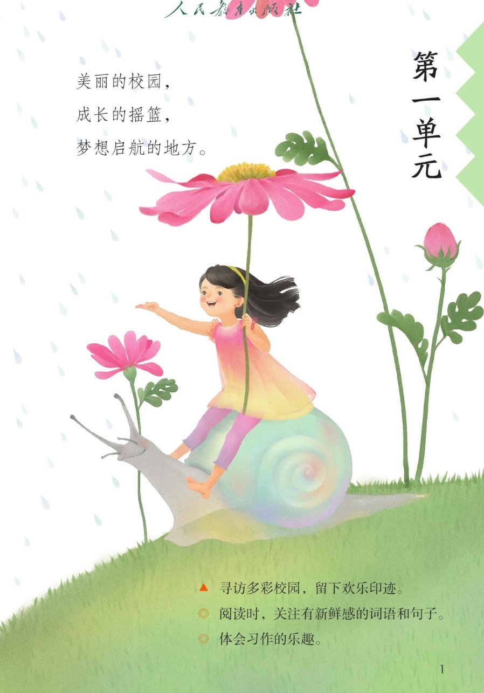
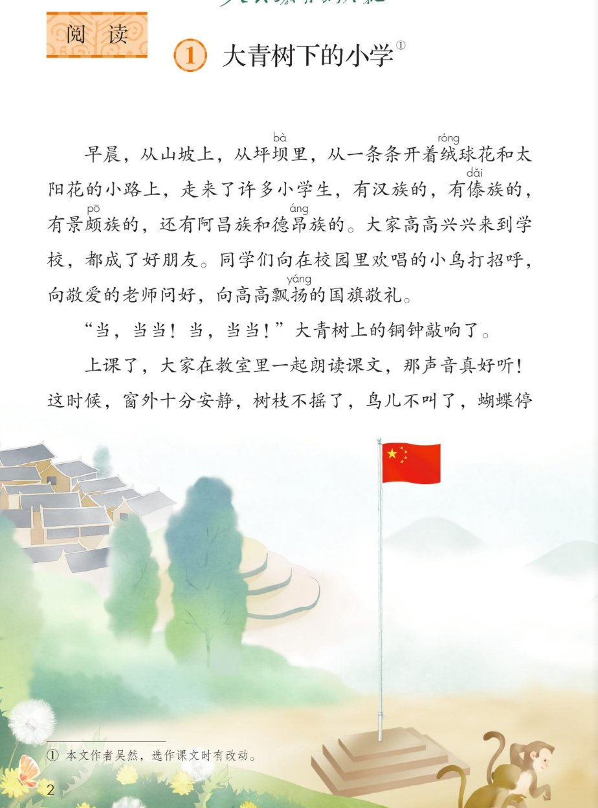
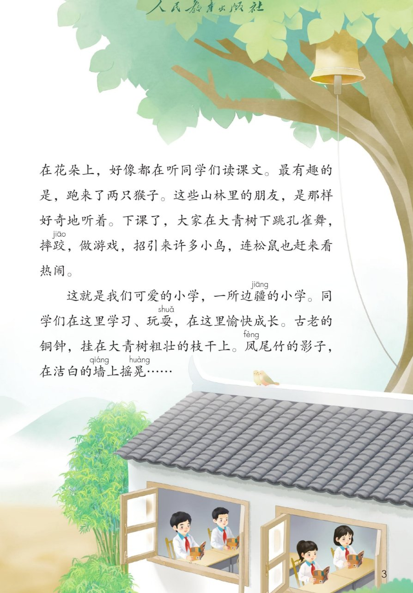

×
🔊 手机听不到声音怎么办？
① 先把手机媒体音量调大，确认没开静音、没连蓝牙耳机；在微信里打开的，点右上角「⋯ → 用浏览器打开」。
② 还是没声音？到应用商店免费下载 Microsoft Edge 浏览器（它自带朗读发声），用它打开本页面就能出声。
③ 换了 Edge 仍然没声音，说明这部手机的硬件/系统不支持网页朗读（多为老旧机型）；近几年买的新手机一般都能正常播放。 → 打开声音自检
① 先把手机媒体音量调大，确认没开静音、没连蓝牙耳机；在微信里打开的，点右上角「⋯ → 用浏览器打开」。
② 还是没声音？到应用商店免费下载 Microsoft Edge 浏览器（它自带朗读发声），用它打开本页面就能出声。
③ 换了 Edge 仍然没声音，说明这部手机的硬件/系统不支持网页朗读（多为老旧机型）；近几年买的新手机一般都能正常播放。 → 打开声音自检
📖 第 1 课《大青树下的小学》· 有声图文带读
统编版语文 · 第一单元·阅读 · 课本 P2~6 · 作者：吴然 · 素养升级版（对标 2022 课标第二学段）
🌟 本课素养目标（对标 2022 课标 · 第二学段）
📌 本单元语文要素——阅读：关注有新鲜感的词语和句子；习作：体会习作的乐趣。
📐 对标 2022 课标第二学段（3~4 年级）：初步学会默读；积累课文中的优美词语、精彩句段；尝试在习作中运用平时积累的语言材料，特别是有新鲜感的词句。
📐 对标 2022 课标第二学段（3~4 年级）：初步学会默读；积累课文中的优美词语、精彩句段；尝试在习作中运用平时积累的语言材料，特别是有新鲜感的词句。
🀄 文化自信
🀄 文化自信
感受边疆各民族小学生亲如一家、和睦相处，体会中华民族大家庭的文化内涵。
🗣 语言运用
🗣 语言运用
认识 12 个生字、会写 12 个字；积累“从…从…从…”“向…向…向…”等有新鲜感的句式，并尝试运用。
💡 思维能力
💡 思维能力
一边读一边想象画面，能说出这所小学“特别的地方”，发展形象思维。
🎨 审美创造
🎨 审美创造
体会排比句式的节奏美、边疆校园的意境美，能有感情地朗读。
① 听读课文（点哪一句，读哪一句）点段前的 ①②③ 听整段
字卡上的拼音标的是本课要认、要写的字，读音来自课本生字表
🎤 朗读要求（老师标准）
① 读准字音，不添字、不漏字、不回读；
② 逗号稍停，句号停得长一点；
③ 一边读一边想象画面，读出边疆小学的可爱；
④ 读出自豪、喜爱的语气。
① 读准字音，不添字、不漏字、不回读；
② 逗号稍停，句号停得长一点；
③ 一边读一边想象画面，读出边疆小学的可爱；
④ 读出自豪、喜爱的语气。
🤫 默读小提示（第二学段要求：初步学会默读）
第一步 听读——点句子听老师读；第二步 默读——不出声、不指读，边读边想画面；第三步 朗读——读出可爱、自豪的语气。
遇到不认识的字，用部首或音序查字典（第二学段要求：有初步独立识字能力）。
第一步 听读——点句子听老师读；第二步 默读——不出声、不指读，边读边想画面；第三步 朗读——读出可爱、自豪的语气。
遇到不认识的字，用部首或音序查字典（第二学段要求：有初步独立识字能力）。
①
早晨，从山坡上，从坪坝里，从一条条开着绒球花和太阳花的小路上，走来了许多小学生，有汉族的，有傣族的，有景颇族的，还有阿昌族和德昂族的。
大家高高兴兴来到学校，都成了好朋友。
同学们向在校园里欢唱的小鸟打招呼，向敬爱的老师问好，向高高飘扬的国旗敬礼。
📌 这一段讲：清晨，各民族的小朋友从四面八方高高兴兴来到学校。
②
“当，当当！当，当当！”大青树上的铜钟敲响了。
📌 这一段讲：大青树上的铜钟敲响，告诉大家上课了。
③
上课了，大家在教室里一起朗读课文，那声音真好听！
这时候，窗外十分安静，树枝不摇了，鸟儿不叫了，蝴蝶停在花朵上，好像都在听同学们读课文。
最有趣的是，跑来了两只猴子。
这些山林里的朋友，是那样好奇地听着。
📌 这一段讲：上课时孩子们认真读书，连窗外的小动物都安静地听。
④
下课了，大家在大青树下跳孔雀舞、摔跤，做游戏，招引来许多小鸟，连松鼠也赶来看热闹。
📌 这一段讲：下课了，孩子们在大青树下跳舞、摔跤、做游戏，十分热闹。
⑤
这就是我们可爱的小学，一所边疆的小学。
同学们在这里学习、玩耍，在这里愉快成长。
古老的铜钟，挂在大青树粗壮的枝干上。
凤尾竹的影子，在洁白的墙上摇晃……
📌 这一段讲：点明这是一所边疆的可爱小学，铜钟和凤尾竹陪伴孩子们成长。
🤔 想一想（点我可跳过）
课本的样子（点一张图，听读这一页）点一张图，听读整页

第 1 页 · 第一单元导语

第 2 页 · 课题与课文开头

第 3 页 · 课文结尾

第 6 页 · 课后练习
📖 人教版《语文》三年级上册 · 课本第 1、2、3、6 页 · 图片仅供个人学习，版权归人民教育出版社所有
② 会认字（12 个）点一个字，听读音、词语和在课文里的句子
坝
坪坝
绒
绒球花
傣
傣族
颇
景颇族
昂
昂扬
扬
飘扬
摔
摔跤
跤
摔跤
耍
玩耍
晃
摇晃
凤
凤尾竹
墙
墙壁
② 会写字（12 个）结构、部首、笔画与书写提示为通用规范，供参考，以教材和老师的指导为准
坡
山坡
左窄右宽，土字旁写小，右边皮字捺舒展。
球
皮球
王字旁写窄，右边求字注意点和撇。
招
招呼
左窄右宽，口朝左，右边召字上刀下口。
呼
欢呼
口字旁在左，右边乎字撇捺舒展。
飘
飘扬
左窄右宽，右边风字撇要舒展包住。
扬
飞扬
左窄右宽，提手旁横变提，右边扬。
读
朗读
言字旁写窄，右边卖字横多要匀。
热
热闹
上窄下宽，四点底四点均匀托住。
闹
吵闹
门字框写得方正，里面市字写小。
粗
粗壮
米字旁写窄，右边且字横要匀。
壮
强壮
左边士字写小，右边将字旁竖要直。
洁
洁白
三点水写窄，右边吉字上士下口。
③ 读一读，记一记（课后题·词语积累）点一行，听读这一组词语
昂昂扬 昂贵 昂首挺胸
扬飘扬 表扬 神采飞扬
墙墙壁 城墙 铜墙铁壁
晃摇晃 晃动 摇头晃脑
③ 听写（12 个词）读两遍 → 你在纸上写 → 报答案 → 听示范句
准备听写 · 共 12 个词
○ ○ ○
点下面的「开始听写」，听到一个词就写一个词。
③ 听写的词 · 造句示范点词听读，点句子听示范句，再自己说一句
1山坡会写字
示范句：许多小学生从山坡上走下来上学。
✏️ 我也能说：什么在什么山坡上。
2皮球会写字
示范句：下课了，同学们拍着皮球。
✏️ 我也能说：下课后，谁玩什么。
3招呼会写字
示范句：同学们向老师打招呼。
✏️ 我也能说：谁向谁打招呼。
4欢呼会写字
示范句：小鸟在枝头欢呼。
✏️ 我也能说：谁因为什么而欢呼。
5飘扬会写字
示范句：国旗在高高飘扬。
✏️ 我也能说：什么在什么地方飘扬。
6飞扬会写字
示范句：他的红领巾随风飞扬。
✏️ 我也能说：什么飞扬。
7朗读会写字
示范句：大家在教室里朗读课文。
✏️ 我也能说：谁在哪里朗读什么。
8热闹会写字
示范句：下课后的校园十分热闹。
✏️ 我也能说：什么地方很热闹。
9吵闹会写字
示范句：上课了，教室里不再吵闹。
✏️ 我也能说：什么地方不吵闹。
10粗壮会写字
示范句：大青树有粗壮的枝干。
✏️ 我也能说：什么很粗壮。
11强壮会写字
示范句：经常锻炼，身体会强壮。
✏️ 我也能说：谁很强壮。
12洁白会写字
示范句：墙是洁白的。
✏️ 我也能说：什么是洁白的。
③ 近义词辨析（4 组）相同点 / 不一样在哪 / 各造一句
安静 — 平静
相同：都表示没有声音、不吵闹。
不一样：安静多说环境、场面；平静多说心情、水面。
安静：上课了，校园十分安静。
平静：听完成功的消息，他的心情很平静。
平静：听完成功的消息，他的心情很平静。
招引 — 吸引
相同：都有把别人、别的东西引过来的意思。
不一样：招引常用动作、景象引来；吸引范围更大，人或物被喜欢的事物拉过去。
招引：下课后热闹的场景招引了许多小鸟。
吸引：这本书的内容深深吸引了我。
吸引：这本书的内容深深吸引了我。
敬爱 — 尊敬
相同：都表示心里尊重、喜爱。
不一样：敬爱多对长辈、老师，带感情；尊敬更正式、更普遍。
敬爱：我们向敬爱的老师问好。
尊敬：大家都尊敬老人。
尊敬：大家都尊敬老人。
好奇 — 奇怪
相同：都表示觉得不平常、想弄明白。
不一样：好奇是想了解、感兴趣，多为积极；奇怪是觉得不对劲、意外。
好奇：猴子好奇地听同学们读课文。
奇怪：今天他没来上学，真奇怪。
奇怪：今天他没来上学，真奇怪。
③ 词语拓展（说一说，记一记）
数量词一所小学 许多小学生 两只猴子 许多小鸟
排比·从从山坡上，从坪坝里，从一条条小路上
排比·向向小鸟打招呼，向老师问好，向国旗敬礼
写样子欢唱的小鸟 敬爱的老师 高高飘扬 十分安静 可爱的 粗壮的 洁白的 古老的
🔍 关注有新鲜感的词语和句子（本单元阅读要素）点一张卡，听读这一组
什么叫“有新鲜感”？一是表层：陌生的词语、特别的句式，积累丰富表达；二是深层：新鲜的视角与内容。下面从课文里找一找。
🔤 新鲜词语·民族名
傣族、景颇族、阿昌族、德昂族——平时很少接触，读起来觉得新鲜、陌生。
🌿 新鲜词语·环境
坪坝、边疆、绒球花、太阳花、凤尾竹——边疆特有的花草与景物。
🤸 新鲜词语·活动
摔跤、跳孔雀舞——边疆孩子特有的课间活动。
🔁 新鲜句式·排比“从”
从山坡上，从坪坝里，从一条条小路上……三个“从”连着说，有节奏、有画面。
🔁 新鲜句式·排比“向”
向小鸟打招呼，向老师问好，向国旗敬礼——三个“向”连着说，有礼貌、有层次。
💭 想象画面
读第①段，你的脑海里出现了什么画面？用一两句话说说（对接课后题1）。
✏️ 圈画交流
在课文里画出你觉得新鲜的词句，和小伙伴说说为什么新鲜。🌈 答案不唯一。
④ 深入理解（8 题 · 先想后看）标「答案不唯一」的题，说得有道理都对
认知课文里提到了哪些民族的小学生？
看解析
🤔 想一想
解析：
课文里提到了汉族、傣族、景颇族、阿昌族和德昂族的小学生，大家从四面八方来到同一所学校。
🌈 答案不唯一，说得有道理都对
认知上课的时候和下课的时候，校园分别是什么样子？
看解析
🤔 想一想
解析：
上课时：教室里书声朗朗，窗外十分安静，连树枝、鸟儿、蝴蝶都安静下来听；下课后：大家在大青树下跳孔雀舞、摔跤、做游戏，招来小鸟和松鼠，十分热闹。
🌈 答案不唯一，说得有道理都对
理解课文写“窗外十分安静，树枝不摇了，鸟儿不叫了，蝴蝶停在花朵上”，这样写有什么好处？
看解析
🤔 想一想
解析：
用树枝、鸟儿、蝴蝶的安静，反衬出孩子们读书声真好听，连小动物都被吸引住了；这是把事物当人来写，叫拟人，让画面更生动。
🌈 答案不唯一，说得有道理都对
理解“这就是我们可爱的小学，一所边疆的小学”这句话表达了作者怎样的感情？
看解析
🤔 想一想
解析：
表达了作者对这所边疆小学的喜爱和自豪，觉得在这里上学很幸福、很珍贵。
🌈 答案不唯一，说得有道理都对
理解读课文时，你觉得哪些词句有“新鲜感”？（课后题1）
看解析
🤔 想一想
解析：
比如“从山坡上，从坪坝里，从一条条小路上”“高高飘扬的国旗”“凤尾竹的影子”等，这些词句让我们好像看到了边疆小学的样子。🌈 答案不唯一，说出你喜欢的词句和理由就很好。
🌈 答案不唯一，说得有道理都对
运用用“从……从……从……”说一句话。
看解析
🤔 想一想
解析：
示范：下课了，同学们从教室里，从大树下，从花坛边，一起跑向操场。🌈 答案不唯一，把三个地方连起来说清楚就行。
🌈 答案不唯一，说得有道理都对
运用你的学校是什么样的？选一个场景（教室里、操场上、花坛边……）说一说。（课后题3）
看解析
🤔 想一想
解析：
示范：我们的学校在马路边。教室里，同学们端端正正坐着读书；操场上，大家在跑步、做游戏；花坛边，几只蝴蝶飞来飞去。🌈 答案不唯一，选一个场景说清楚就很好。
🌈 答案不唯一，说得有道理都对
拓展如果你是大青树下的小学生，你想对别的民族的小伙伴说些什么？
看解析
🤔 想一想
解析：
思路一：欢迎你到我们学校来，我们一起读书、一起玩。思路二：虽然我们民族不同，但我们是好朋友。思路三：我们要互相帮助，把学校变得更可爱。🌈 答案不唯一，说清想说什么、为什么就是完整的一段话。
🌈 答案不唯一，说得有道理都对
⑤ 这所小学特别的地方（按顺序听一听）
1
多民族同校
2
清晨到校
3
上课读书
4
下课热闹
5
边疆小学
💬 介绍支架：先多民族同校 → 再清晨问好敬礼 → 接着上课安静、下课热闹 → 最后边疆小学伴我成长。
⑤ 讲解员分段朗读点一位讲解员，听他（她）读的这一段
📖 讲解员·清晨
早晨，从山坡上，从坪坝里，从一条条开着绒球花和太阳花的小路上，走来了许多小学生。 / 大家高高兴兴来到学校，都成了好朋友。
💬 要读得清楚、平稳，像在介绍这所小学
📖 讲解员·上课
上课了，大家在教室里一起朗读课文，那声音真好听！ / 窗外十分安静，树枝不摇了，鸟儿不叫了，蝴蝶停在花朵上，好像都在听同学们读课文。
💬 要读得清楚、平稳，像在介绍这所小学
📖 讲解员·课后
下课了，大家在大青树下跳孔雀舞、摔跤，做游戏，招引来许多小鸟，连松鼠也赶来看热闹。
💬 要读得清楚、平稳，像在介绍这所小学
📖 讲解员·结尾
这就是我们可爱的小学，一所边疆的小学。 / 同学们在这里学习、玩耍，在这里愉快成长。
💬 要读得清楚、平稳，像在介绍这所小学
📖 讲解员·景物
古老的铜钟，挂在大青树粗壮的枝干上。 / 凤尾竹的影子，在洁白的墙上摇晃。
💬 要读得清楚、平稳，像在介绍这所小学
📋 学习评价（素养达成自评）每题给自己打 1~3 颗星
1. 我能正确认读本课 12 个会认字。 ☆ ☆ ☆
2. 我能规范书写 12 个会写字（注意书写提示）。 ☆ ☆ ☆
3. 我能找出课文里有新鲜感的词句，并说出理由。 ☆ ☆ ☆
4. 我能说出这所小学“特别的地方”。 ☆ ☆ ☆
5. 我能边读边想象画面，有感情地朗读。 ☆ ☆ ☆
✍️ 小练笔（衔接习作要素「体会习作的乐趣」）
✍️ 小练笔（为单元习作《猜猜他是谁》做准备）：
用上今天积累的有新鲜感的词句，选一个场景（教室里 / 操场上 / 花坛边……）写写自己的学校。
例：上课了，从教室里，从走廊上，从大树下，传来了同学们琅琅的读书声。
用上今天积累的有新鲜感的词句，选一个场景（教室里 / 操场上 / 花坛边……）写写自己的学校。
例：上课了，从教室里，从走廊上，从大树下，传来了同学们琅琅的读书声。